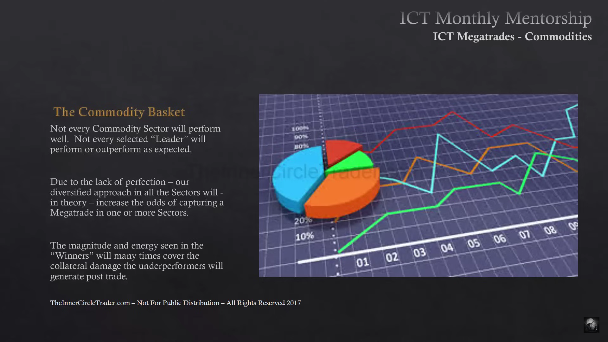
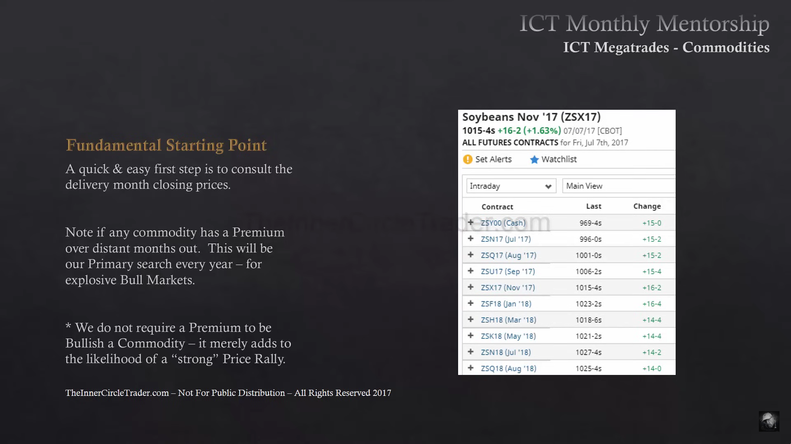

Commodity Mega-Trades
Commodity Mega-Trades
HTF-Swing-Modell für Rohstoff-Sektoren (Agra, Finanzsektor, Metalle) — analoge Methodik zu Bond Mega-Trades, andere Asset-Klasse.
Ablauf
- Nach relevanten Schlagzeilen zum Sektor suchen (Wetter/Ernte, OPEC-Kürzungen, Kriege etc.) — ein einzelner großer News-Artikel kann für die nötige Bewegung reichen, harte Marktdaten sind nicht zwingend nötig.
- Optimalerweise ein Premium-Markt (nicht zwingend, aber höhere Move-Wahrscheinlichkeit).
- USDX als Vergleich: USDX ↑ → Commodities meist ↓ (Normalfall), USDX ↓ → Commodities meist ↑. Ausnahme: beide können auch >1 Jahr gleichläufig sein.
- Relative Strength + SMT-Divergenz zwischen korrelierten Märkten (z.B. Corn/Soybeans/Wheat laufen normalerweise im Tandem — Divergenz stützt die These).
- Leader-Markt im Sektor identifizieren (bester Chart/Voraussetzungen) und die Trade-Idee daran ausrichten.
- Umsetzung über gehebelte Derivate (Mini-Futures).
Bei bestätigter These lange im Trade bleiben — Mega-Trades gehen laut Quelle sehr weit.

Der 7-Schritte-Suchprozess für Mega-Trades: Schlagzeilen, Premium-Markt, USDX-Vergleich, Relative Strength/SMT, Sektor-Leader finden, Leader folgen, Umsetzung über gehebelte Mini-Futures.

Erster Analyseschritt: Closing Price der vorherigen Future-Kontrakte prüfen — Closing im Premium ist ein zusätzlicher Indikator für die Trade-Idee.
Relative-Strength-Leader-Auswahl (RSI)
- RSI zeigt, welcher Markt innerhalb einer Kategorie (z.B. Grains) am relevantesten ist — je nachdem ob man bullish oder bearish eingestellt ist.
- Immer den DXY im Blick behalten: Dollar hoch → Commodities tendenziell bearish (und umgekehrt).
- Leader-Identifikation: bei fallendem Dollar den Markt suchen, der ein Higher Low bildet, während andere in derselben Kategorie ein Lower Low oder Equal Low bilden (spiegelbildlich für bearishe Märkte).

Innerhalb einer Kategorie (z.B. Grains) wird der Leader gesucht: bei fallendem Dollar bildet ein Markt ein Higher Low, während andere ein Lower Low oder Equal Low bilden.
- Grundsatz: sich immer auf die stärksten bzw. schwächsten Märkte der Kategorie konzentrieren, nicht auf die durchschnittlichen.

Verwandt
- Bond Mega-Trades
- SMT (Smart Money Divergence)
- Open Float & Liquidity Pools (OI als zusätzlicher Bestätigungsfaktor)
- Premium vs. Carrying Charge Market
Was zeigt hierher 12
- Commodity Mega-Trades (Source)Quellen
- Katalog (Original)Meta
- Intermarket RelationshipsKonzepte
- Month 10 (Source)Quellen
- Month 11 (Source)Quellen
- Open Float & Liquidity PoolsKonzepte
- Premium vs. Carrying Charge MarketKonzepte
- Relative Strength Analysis - Accumulation & Distribution (Source)Quellen
- Seasonal TendencyKonzepte
- Smart Money Concepts (SMC)Konzepte
- SMT (Smart Money Divergence)Konzepte
- Stock Mega-TradesModelle